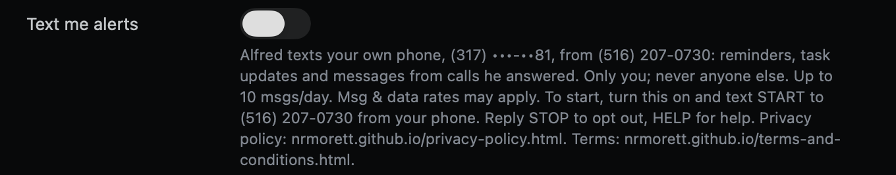

Last updated: 18 November 2026.
Alfred is a personal assistant app that Nicholas Moretton, a sole proprietor, runs on his own computer for his own use. It is not offered to anyone else. It can send automated text alerts from +1 (516) 207-0730 to one recipient only: the account holder's own mobile phone.
In the app's Settings (His own number), the account holder turns on "Text me alerts". The setting shows this disclosure next to the switch (actual screenshot; the phone number is partly hidden here):

He then texts START to +1 (516) 207-0730 from his own phone. The reply confirms: "Alfred: You're subscribed to alerts from your Alfred assistant. Up to 10 msgs/day. Msg & data rates may apply. Reply HELP for help, STOP to opt out."
Replying STOP at any time ends all messages. HELP gives help. No other number can be added, and there is no public sign-up.